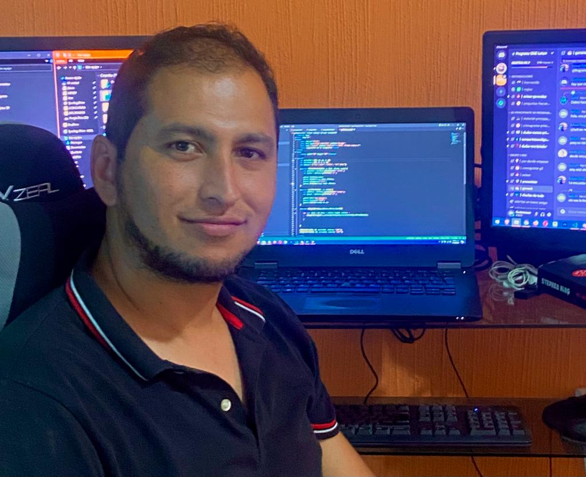

Edwin Contreras
Business Data Analyst & Systems Engineer
Transformo Datos Complejos en Decisión y Valor Comercial
Especialista en estructuración de modelos relacionales, análisis por cohortes y automatización de reportes mediante SQL, Power BI y Python. Enfocado en resolver cuellos de botella operativos, optimización de inventarios y métricas clave de negocio (LTV, Retención, Churn).
Stack & Habilidades Técnicas
Tecnologías de procesamiento, modelado, experimentación y visualización de datos.
SQL Avanzado
CTEs, Window Functions, Funnels
Power BI & DAX
Dashboards & Time Intelligence
Modelado ER
Esquema Estrella / Copo
Python & SciPy
Pandas, Stats, Pruebas A/B
Análisis de Cohortes
LTV, Churn, Retención
Excel & VBA
Macros & Conciliación ETL
Proyectos Destacados
Casos de estudio de impacto real estructurados bajo objetivos de negocio, rigor técnico y resultados cuantitativos.
Sistema Analítico de Conciliación de Inventarios (Global Gas)
🎯 Desafío: Pérdidas invisibles de gas LP por diferencias constantes entre el inventario registrado en papel/sistema y el gas físico real, sin avisos para detectarlas a tiempo.
🛠️ Proceso: Limpieza y organización de más de 50,000 registros de inventario, conectando los datos para revisar y auditar las operaciones en automático.
📈 Resultado: Automatización de la revisión semanal, identificando al instante fugas o pérdidas importantes (superiores a 50 kg) para actuar de inmediato.
💡 Lección: Diseñar herramientas fáciles de usar para el equipo operativo garantiza que la solución realmente se adopte en el día a día.
Análisis Integral de Negocio, Funnels y Pruebas A/B (RappiPlus)
🎯 Desafío: Descubrir en qué paso se perdían los clientes al intentar suscribirse y asegurar que cada usuario nuevo fuera rentable.
🛠️ Proceso: Rastreo del comportamiento de los usuarios por grupos y realización de pruebas comparativas para validar qué cambios en la página de pago aumentaban las ventas.
📈 Resultado: Confirmación de que el nuevo diseño de pago aumentó las compras de forma real y optimización del presupuesto de publicidad enfocándolo en los canales más rentables.
💡 Lección: Probar y validar estadísticamente las mejoras de una plataforma evita hacer cambios a ciegas que puedan perjudicar las ventas.
Dashboard Comercial y Recurrencia Inmobiliaria (Andes Capital)
🎯 Desafío: Desconocimiento del desempeño real de cada vendedor y del tiempo exacto que tarda un cliente en volver a comprar una propiedad.
🛠️ Proceso: Estructuración de la base de datos para conectar las ventas con fechas y vendedores, calculando comparativos de rendimiento año contra año.
📈 Resultado: Panel automatizado para medir qué tan rápido se venden o reasignan los inmuebles según su tamaño ($m^2$) y tipo de propiedad.
💡 Lección: Organizar bien los datos desde la base ahorra tiempo de cálculo y permite obtener reportes inmediatos y sin errores.
Validación de Hipótesis y Experimento A/B (E-commerce)
🎯 Desafío: Comprobar si un nuevo diseño en la página web lograba aumentar las ventas y conseguir que los clientes gastaran más en cada compra.
🛠️ Proceso: Comparación del comportamiento entre usuarios que vieron el diseño original y los que vieron el nuevo, asegurando un análisis justo sin distorsiones por visitas sin compra.
📈 Resultado: Confirmación segura (con un 95% de certeza) de que la nueva versión superó a la anterior, recomendando su activación definitiva.
💡 Lección: Separar el origen del tráfico de los usuarios evita tomar decisiones erróneas basadas en datos engañosos.
Análisis de Embudo y Retención de Usuarios (Mercado Libre)
🎯 Desafío: Medir qué porcentaje de usuarios abandona la compra en cada paso del proceso, sin ralentizar ni saturar la base de datos de la empresa.
🛠️ Proceso: Construcción de consultas avanzadas y organizadas para rastrear el recorrido paso a paso de los usuarios dentro de la plataforma.
📈 Resultado: Detección del punto exacto donde la gente abandonaba y diseño de propuestas para mejorar la experiencia de bienvenida y registro de nuevos clientes.
💡 Lección: Escribir código ordenado y por bloques facilita corregir errores a tiempo y mantener los datos listos para auditorías.